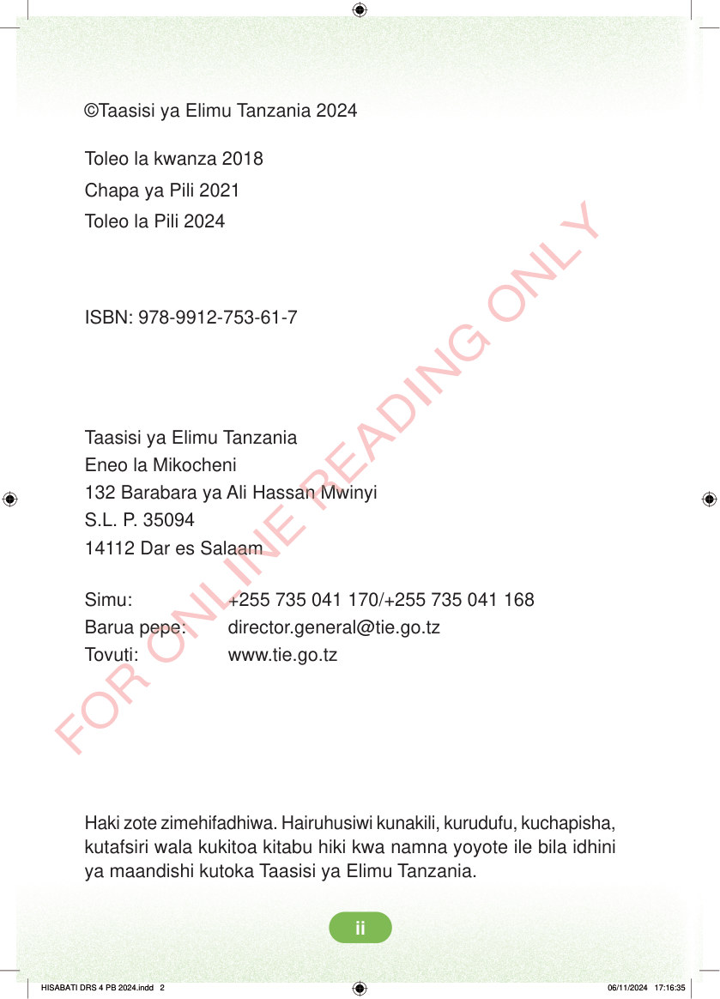

©Taasisi ya Elimu Tanzania 2024 Toleo la kwanza 2018 Chapa ya Pili 2021 Toleo la Pili 2024 ISBN: 978-9912-753-61-7 Taasisi ya Elimu Tanzania Eneo la Mikocheni 132 Barabara ya Ali Hassan Mwinyi S.L. P. 35094 14112 Dar es Salaam Simu: +255 735 041 170/+255 735 041 168 Barua pepe: director.general@tie.go.tz Tovuti: www.tie.go.tz Haki zote zimehifadhiwa. Hairuhusiwi kunakili, kurudufu, kuchapisha, kutafsiri wala kukitoa kitabu hiki kwa namna yoyote ile bila idhini ya maandishi kutoka Taasisi ya Elimu Tanzania. HISABATI DRS 4 PB 2024.indd 2 HISABATI DRS 4 PB 2024.indd 2 06/11/2024 17:16:35 06/11/2024 17:16:35